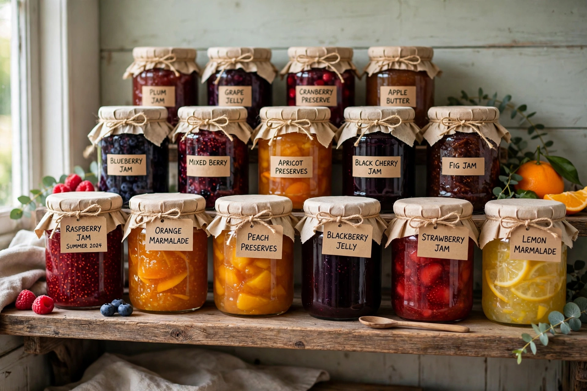

Fruit preserves
From Wikipedia, the free encyclopedia

Fruit preserves are preparations of fruit (or vegetables) whose main preservative is sugar, often aided by Pectin and acid, cooked and sealed for long storage. The family includes jam (crushed fruit pulp), jelly (clear, made from juice), marmalade (citrus, including peel), conserves, fruit butters and chutneys; legal definitions of each vary by jurisdiction.
Making and science
Preserves set because pectin — a polysaccharide in fruit cell walls — forms a gel with sugar and acid when heated above roughly 104 °C (the traditional 'wrinkle test' checks the set). Sugar binds water, inhibiting microbes; hot filling and sealed jars create a vacuum as they cool. Fruits low in pectin (strawberries, cherries) need added pectin or high-pectin partners such as apple or citrus.
Varieties
Marmalade properly denotes citrus preserves — Seville orange is classic in Britain, where legend (unreliable) credits Janet Keiller of Dundee in the 1790s. Jelly is strained to clarity; American 'jam' and British usage differ slightly; French confiture and German Konfitüre follow EU rules reserving 'extra jam' for higher fruit content. Savoury cousins include Chutney and Chow-chow.
History
Sugar-preservation of fruit is ancient — Roman recipes in Apicius preserve quinces in honey — but industrial canning and cheap sugar in the nineteenth century made jam a working-class staple and wartime comfort food, celebrated in Britain's Women's Institute culture and rationing-era 'Victory gardens'.